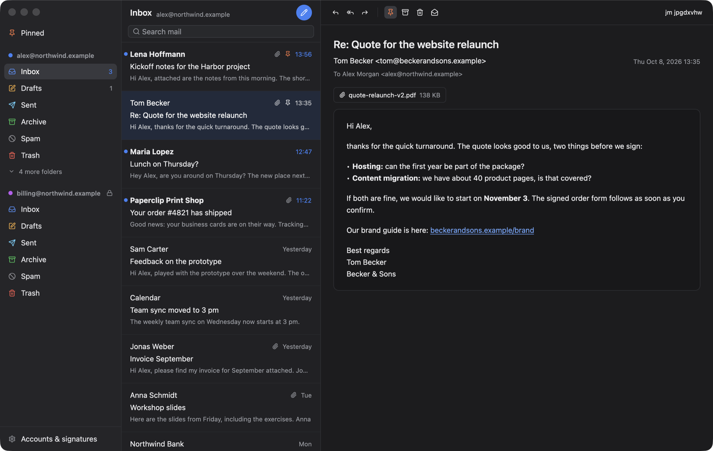
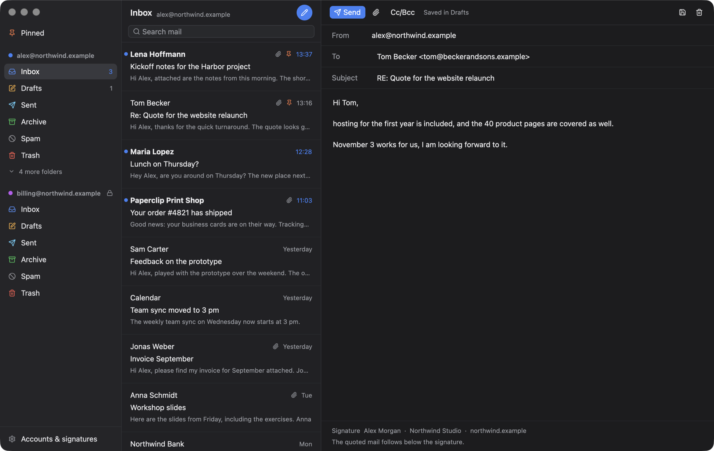

A small native mail client for macOS, written in Rust. It reads your Microsoft 365 mailboxes, lets you pin what still needs doing, and writes clean HTML mail with your signature. Its command line lets agents read mail and prepare drafts; sending stays with you.

Three columns, one blue for what matters, and every mail exactly where Outlook and your phone expect it: Just Mail talks to Microsoft Graph and keeps all state on the server.
Each with its own folders, colour and signature. Mark an account read-only and Just Mail will never mark, move or draft anything there, handy for mailboxes another system processes.
Pinned mail sits on top of the inbox and is the Outlook follow-up flag underneath, so Outlook, Spark and your phone agree. One view collects pinned mail of all accounts.
Replies land in the conversation above the quote, as one tidy HTML block Outlook renders well. Your text stays editable; the signature and quote are never touched. What was already answered shows below the mail, without the quote.
A long one for new mail and a short one for replies, imported from Spark if you used it, logo included as an inline image so it shows up everywhere.
Newsletters are turned into readable text, scripts never run and remote images (mostly tracking pixels) stay blocked until you ask for them.
Rust and GPUI, no web view. About 75 MB of memory and next to no CPU while it waits for mail.
Keyboard first: j/k, r, e, s, /.
The jm command shares accounts with the app. It lists, searches and reads mail,
downloads attachments, pins and files, and writes drafts with your signature. A running app shows a new
draft at once, and jm open puts a mail in front of you.
Agents draft, you send. jm and its MCP server are built without the
code that sends mail, so no prompt and no setting can make them send. You review the draft in Just Mail
and press send.
Every command speaks JSON (--json), uses short ids, and has stable exit codes.
# what came in today, and what is pinned jm list --since today jm list --flagged # find and read jm search invoice --attachments jm show a1b2c3d4 # answer in the conversation, as a draft jm drafts reply a1b2c3d4 --body-file answer.txt jm open a1b2c3d4 # the same as tools for agents jm mcp

Just Mail is a personal project and comes as source for now. You need macOS 13 or later and a Rust toolchain.
git clone https://github.com/mneuhaus/my-mail
cd my-mail
tools/bundle-macos.sh --install
# → /Applications/Just Mail.app and ~/bin/jm
jm accounts, then jm --help.tools/demo/run.sh starts the app on the made-up mailbox
these screenshots show.